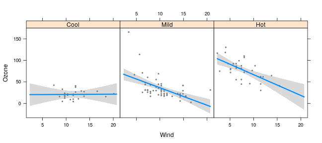
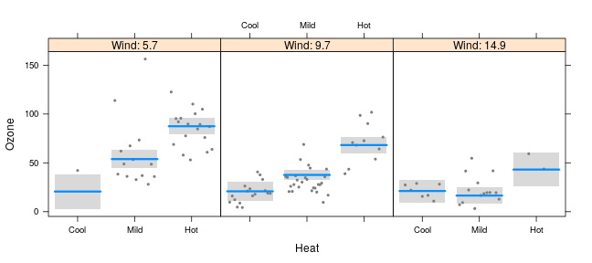
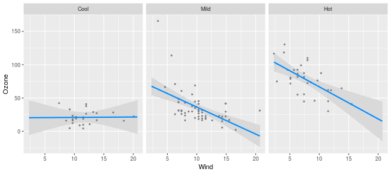
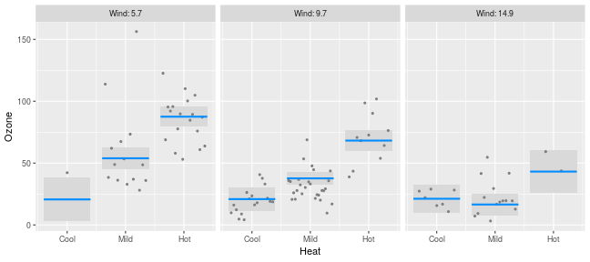
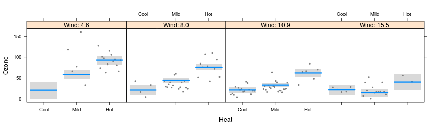
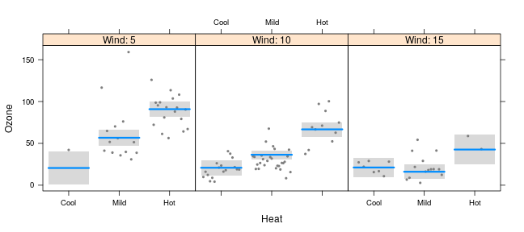
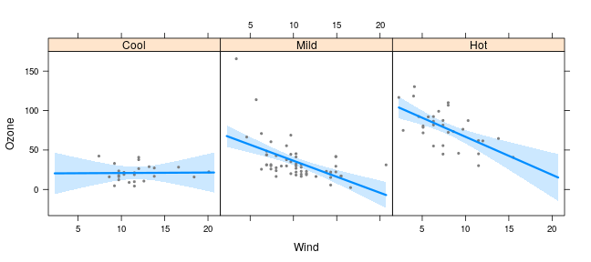
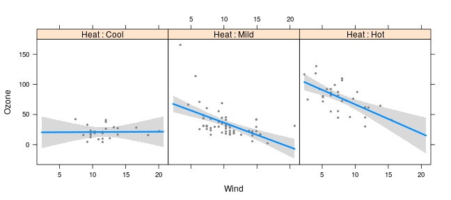
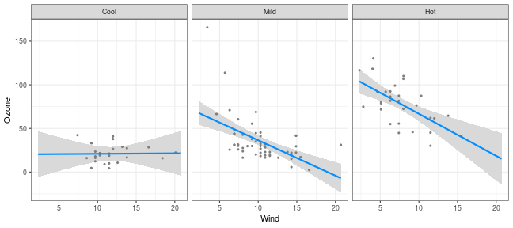
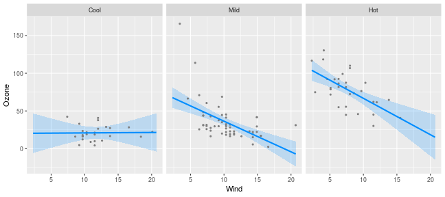

As was the case with nonlinear terms, the relationship between x and y in a model with interactions also (typically) depends on multiple coefficients and thus, a visual summary tends to be much more readily understood than a numeric one.
For models with interactions, we must simultaneously visualize the effect of two explanatory variables. The visreg package offers two methods for doing so; this page describes what we call cross-sectional plots, which plot one-dimensional relationships between the response and one predictor for several values of another predictor, either in separate panels or overlaid on top of one another. The package also provides methods for constructing surface plots, which attempt to provide a picture of the regression surface over both dimensions simultaneously.
Let’s fit a model that involves an interaction between a continuous term and a categorical term:
airquality$Heat <- cut(airquality$Temp, 3, labels=c("Cool", "Mild", "Hot"))
fit <- lm(Ozone ~ Solar.R + Wind * Heat, data=airquality)
We can then use visreg to see how the effect of wind on ozone differs depending on the temperature:
visreg(fit, "Wind", by="Heat", layout=c(3,1))

Or alternatively, see how the effect of temperature depends on the wind level:
visreg(fit, "Heat", by="Wind", layout=c(3,1))

Note that, since Wind is a continuous variable, the panels above are somewhat arbitrary. By default, visreg sets up three panels using the 10th, 50th, and 90th percentiles, but the user can change both the number and the location of these break points.
By default, visreg uses the lattice package to lay out the panels. Thus, in order to change the appearance of these sorts of plots, you may have to read the lattice documentation for the relevant options, such as layout in the above examples. Alternatively, you can use ggplot2 as the graphics engine by specifying gg=TRUE:
visreg(fit, "Wind", by="Heat", gg=TRUE)

visreg(fit, "Heat", by="Wind", gg=TRUE)

In all of these plots, note that each partial residuals appears exactly once in the plot, in the panel it is closest to.
Options
For a numeric by variable, the breaks argument controls the values at which the cross-sections are taken. By default, cross-sections are taken at three quantiles (10th, 50th, and 90th), but a larger number can be specified:
visreg(fit, "Heat", by="Wind", breaks=4, layout=c(4,1))

If breaks is a vector of numbers, it specifies the values at which the cross-sections are to be taken:
visreg(fit, "Heat", by="Wind", breaks=c(seq(5, 15, 5)), layout=c(3,1))

Graphical options: lattice
As mentioned above, when using lattice as the graphics engine, the appearance of a plot can typically be changed by specifying the appropriate lattice option, which gets passed along by visreg. One exception is the appearance of lines, points, and bands, which are specified just as they are in base plots:
visreg(fit, "Wind", by="Heat", layout=c(3,1), fill.par=list(col="#008DFF33"))

Another exception is the strip option; visreg sets up the strip internally, which interferes with the user passing the strip option along to lattice. visreg does, however, explicitly provide the strip.names option:
visreg(fit, "Wind", by="Heat", layout=c(3,1), strip.names=TRUE)

You can also explicitly specify the labels for each strip:
visreg(fit, "Wind", by="Heat", layout=c(3,1), strip.names=c("Cold days", "Mild days", "Hot days"))
Other aspects of the strip’s appearance, such as the background color, can be set with calls to the lattice package’s trellis.par.set:
trellis.par.set(strip.background=list(col="gray90"))
## Error in trellis.par.set(strip.background = list(col = "gray90")): could not find function "trellis.par.set"
visreg(fit, "Wind", by="Heat", layout=c(3,1))
Graphical options: ggplot2
As discussed on the ggplot2 page, most ggplot2 options are specified via additional components to the plot, such as:
visreg(fit, "Wind", by="Heat", gg=TRUE) + theme_bw()

The exception, again, is the appearance of points/lines/bands, which are specified with the usual visreg arguments:
visreg(fit, "Wind", by="Heat", gg=TRUE, fill.par=list(fill="#008DFF33"))
